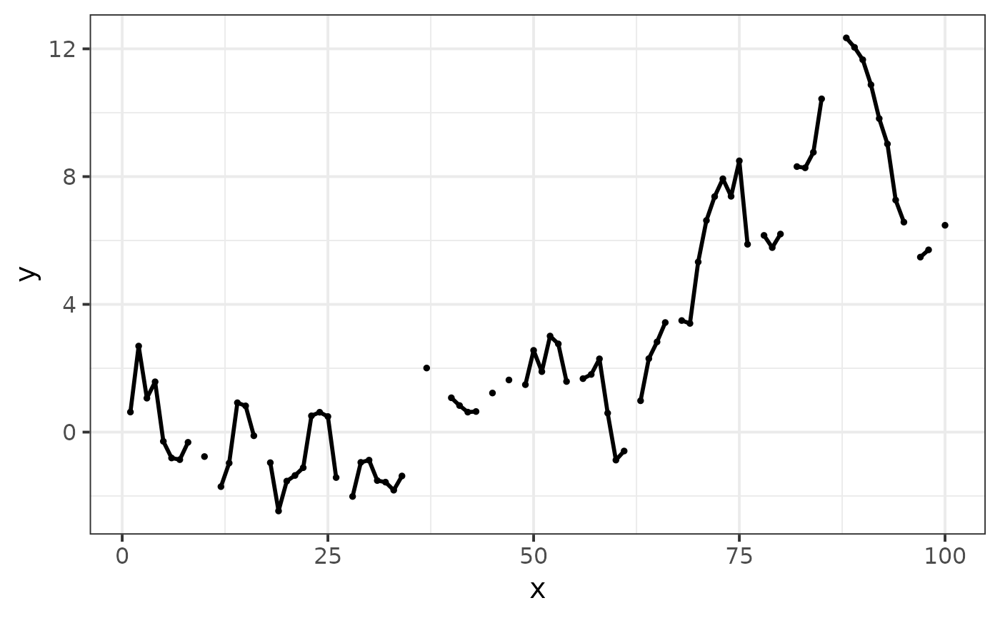
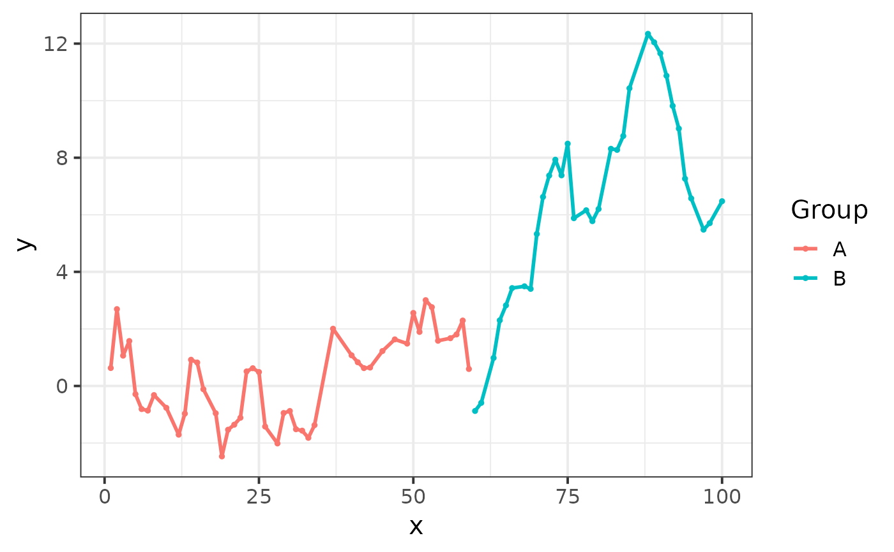

Add broken pointline to ggplot
Arguments
- df
Data with columns
aes_xandaes_y.- aes_x
Name of the
xaesthetic.- aes_y
Name of the
yaesthetic.- size
Size of the line and the points.
- ...
Other aesthetics to pass to
ggplot2::aes_(). Valid aesthetics are the aesthetics forggplot2::geom_path()andggplot2::geom_point()(exceptsizethat is fixed). NB: if we want the colour to change withGroupwe would need to addcolour = as.name(Group).
Examples
library(dplyr)
#>
#> Attaching package: ‘dplyr’
#> The following objects are masked from ‘package:stats’:
#>
#> filter, lag
#> The following objects are masked from ‘package:base’:
#>
#> intersect, setdiff, setequal, union
library(ggplot2)
df1 <- tibble(x = 1:100, y = cumsum(rnorm(100))) %>%
slice_sample(prop = .8) %>%
arrange(x)
ggplot() +
add_broken_pointline(df1) +
theme_bw(base_size = 15)
#> Warning: `aes_()` was deprecated in ggplot2 3.0.0.
#> ℹ Please use tidy evaluation idioms with `aes()`
#> ℹ The deprecated feature was likely used in the EczemaPred package.
#> Please report the issue at <https://github.com/ghurault/EczemaPred/issues>.
#> Warning: Using `size` aesthetic for lines was deprecated in ggplot2 3.4.0.
#> ℹ Please use `linewidth` instead.
#> ℹ The deprecated feature was likely used in the EczemaPred package.
#> Please report the issue at <https://github.com/ghurault/EczemaPred/issues>.
#> Warning: Removed 20 rows containing missing values or values outside the scale range
#> (`geom_point()`).

df2 <- mutate(df1, Group = case_when(x < 60 ~ "A", TRUE ~ "B"))
ggplot() +
add_broken_pointline(df2, colour = as.name("Group")) +
scale_colour_discrete(na.translate = FALSE) +
theme_bw(base_size = 15)
#> Warning: Removed 20 rows containing missing values or values outside the scale range
#> (`geom_path()`).
#> Warning: Removed 20 rows containing missing values or values outside the scale range
#> (`geom_point()`).
